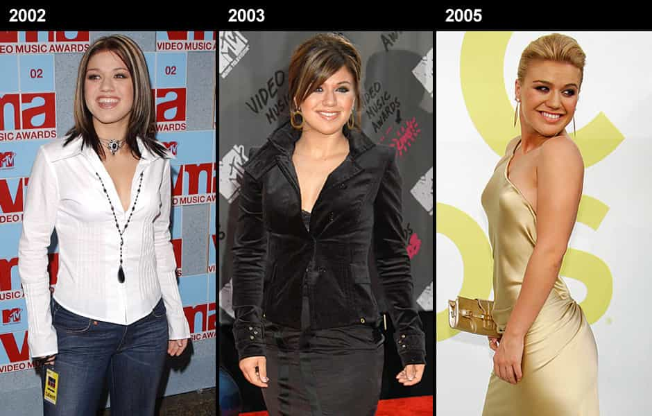

< < < Back
Fat Acceptance Is The Leftist Elite’s Ultimate Cultural Doomsday Device – Return Of Kings
I’ve noticed a recent trend on ROK these past few weeks: the editors are reaching back into the vault and reminding us of some key tenets of not only game, but of nation building and societal maintenance. Of particular note is the series of common-sense articles posted regarding overweight women, and why right-thinking men should avoid them like the plague. But whenever I read an article here, I like to delve deeper down the rabbit hole.
I look around and see fat acceptance taking the nation by storm, and I see key figures in the manosphere yanking back the covers and playing reveille as loud as they can to wake the groggy masses from their media-induced slumber. But here’s an issue few of us ever discuss: where did all of this “fat acceptance” come from, and what’s the agenda behind it?
Phase I: The Farce Awakens
As indicated in the feature photo above, it is a well-known fact that, by and large, the African American community has essentially accepted overweight women as par for the course. But it wasn’t always that way. If you grew up in the mid-70s or early 80s, you remember a time when women like Nichelle Nichols, Heather Locklear, Cheryl Ladd, and Morgan Fairchild dominated the airwaves. In the 90s you had Jennifer Lopez, Salma Hayek, Rosie Perez, En Vogue, and TLC. Sure, you might see a few tubby chicks in Wal-Mart, but even that was a rarity. But then, between circa 1999 and 2006, we went from seeing this every day:

to this:
Yes, both of those photos are of American Idol star Kelly Clarkson. She’s not alone, and people like her didn’t just materialize out of the ether. The reason we regularly see land whales dragging around five kids spawned by ten different dudes and the reason we see these same train-wrecks giving fit, well-paid dudes the cold shoulder in clubs all across America is because the leftist elites learned a long time ago that without a patriarchy, a society’s standards go out of the window.
What’s left is a confused, disorganized rabble ready and willing to be led whichever way the wind blows. With Western women, it’s even worse, because they have NO CLUE that they’re lost and listless; in fact, they think they’ve become “empowered.”
Back to the feature photo. It’s well known that one of the most detrimental effects the welfare state of the 60s had on urban communities is that it decimated the family unit. The effects were not immediate, to be sure; it took several decades for the lack of father figures to coalesce into a communities-wide attitude of “let me do me and you do you.” The women from these communities no longer saw a need to keep their sexuality in check, to watch their weight, or to even act in a remotely feminine manner.
The sad truth behind this, however, is that this metamorphosis was by design rather than by chance. The elites, since time immemorial, have used minorities as crash test dummies for their pet social projects. Ever since the French Revolution, the elites have been looking for that magic formula, that soothing mantra, that could tame the masses. Police state regimes of the kind you see in movies like “The Hunger Games” and “Equilibrium” don’t work in the real world because the open degradation and brutalization of the populace invariably leads to open and violent rebellion.
Religion worked for a time, until the working class witnessed the elites so frequently and flagrantly violate the very religious mantras they espoused that they soon became disillusioned with it all, and, once again, rebelled. With urban minorities they found their magic bullet: destroy the patriarchy and sell women on the idea that they can act as heads of households, communities, and, by extension, society, and you win by default.
Nobody really paid much attention to this phenomenon so long as only specific, remote segments of the population were affected. But now, like a malignant cyst, this phenomenon has erupted out of our nation’s inner cities and trailer parks and has now invaded every aspect of our culture, so that now you frequently see things like this:
One of my cousins was the first to coin the phrase “weaponized stupidity.” What else do you call a phenomenon or philosophy that convinces a society to embrace physically and emotionally dysfunctional individuals as mothers, wives, and potential mates? At this point you’re probably saying, okay, Ray, we get it, Sports Illustrated put a fat chick on its cover, you’ve got MTV, aka lib-tard central, showing a regular-sized guy literally rolling around on the floor with a beached whale. What else is new? What’s new is that the end goal is not just fat acceptance for fat acceptance’s sake. It’s not just about big women getting laid. It’s about the hijacking of a society.
Phase II: The Trap Is Sprung
So what happens when a society at large finds itself predominated by women who look and act in an unattractive manner? You get a lot of men who aren’t willing to stick with the families they form with those women and an even larger number of men who won’t jump on the grenade in the first place.
Sure, you’ll find thirsty betas who’ll pick up one of these barkers from the kennel and put a ring on them. But at some point, even the thirstiest of betas will wake up one day, look at the behemoth snoring loudly next to him, and say, what the hell am I doing with my life? At that point, all it takes is for our portly missus to make one criticism too many, to spill a whole plate of nachos all over the bed once too many times, or to stop up the toilet one time too many, and our beta chump will be out the door faster than Scooby and Shaggy after spotting a g-g-g-g-ghost.
What you’re left with is yet another divorced couple, yet another bitter single mother, and yet another set of children who will be shuttled back and forth between two bitter, disgruntled parents. Chances are, these women had mothers or grandmothers who bought the feminist lie back in the 70s, and passed on their misguided beliefs to them. A man should appreciate your mind, not your body, they probably told them. You are not a sex object!
What the sisterhood failed to realize is that biology cares not for empty pseudo-philosophies. Men generally want to share their lives and livelihoods with young, vibrant, attractive women. But now society’s gone into full-reeducation mode, directing its trained lackeys to constantly chastise established men of means for going after young, slender women instead of their physically and emotionally weathered mothers and grandmothers.
The elites have known for years that a nuclear family, with a healthy, dutiful man, an attractive, nurturing woman, and well-rounded, obedient children set up on their own plot of land, is basically a self-contained unit. Government intervention is fairly superfluous at that point. Women—real women who will stand by their men and help carve out a future for their children—are needed to build a society. But when you look around today, short of an Amish girl here or there, such women are in extremely short supply. The dating and marriage pool is largely dominated by jewels like this one:
This is why you’ve got a mass sexodus amongst western men. The elites have boosted the egos of your Rebel Wilsons and Gabourey Sidibes of the world to such all-time highs that they think they should be able to bed the kings and princes among men. This in turn gives the genuine 8’s, 9’s, and 10’s an even higher sense of entitlement to the point to where they’re virtually unapproachable unless you’ve got at least ten years of game under your belt, a private jet, and an endless supply of cash.
So now you’ve got a bunch of aimless single men and clueless single women wandering around; single, lost souls who would have in times past banded together to effect real social change in the face of injustice, but have now become tools of the very elites that oppress them. Without patriarchy, relationships between men and women devolve into little more than a hodge-podge of random hookups and drunken text messages.
In the absence of healthy, nurturing male-female relationships as the standard, the door suddenly becomes open for same sex marriage, pedophilia, bestiality, and any other nightmarish mockery of the human condition you can think of. Think back to the months leading up to Obergefell, the Supreme Court ruling that sanctioned homosexual marriage. You had a lot of people saying “meh, men and women have pretty much screwed up the marriage institution, why not let the gays have a shot?” That sentiment did NOT come from the people themselves. It was spoon-fed to them by the leftist cabal.
Haven’t you ever wondered why, in the face of a 50-70% divorce rate in America, we haven’t had a run of PSAs on television coaching men and women on how to make heterosexual relationships and marriages work? The plan all along has been to obliterate male-female relationships so that every freak and weirdo imaginable could legitimate their respective fetishes. A handful of gays like lesbian activist Masha Gessen have gone as far as to openly admit that the endgame all along was to destroy heterosexual relationships, so that their own sordid facsimiles of “relationships” could thrive.
With half of your population apathetic towards the demise of normal relationships, and the other half consisting of weak-willed, weak-minded men who may actually view homosexuality as a viable alternative in the face of an increasingly hostile sexual and relationship landscape, it’s little wonder that we find ourselves where we are today. And that was the plan all along.
We must remember that the elite ranks, if Hollywood is any indication, are primarily comprised of people with virtually nonexistent morals. Their leaders want to remake the world in a way that reflects the chaotic, drug-fueled, fetish-infused lifestyle to which they have become accustomed. Only a patriarchy consisting of men who have women in their society worth fighting for can stand against them. But in the absence of such women, why will a man fight against the system? If anything, he’ll fight other men over what few, attractive, feminine women remain. I believe much of the racial tension we see today is based at least in part on this, and that the elites manufactured this tension just like they did in the aftermath of Bacon’s Rebellion.
In Conclusion
We’ve all known that the liberal elites have been behind the reorganization of American society for the past forty years. But few know the reason behind it, the ultimate end-game, or the full extent of the means used by the elites to bring their goals to fruition. Fat acceptance is one such means, and it’s deadlier than many of us realize.
The way I see it, crippling this monstrosity would be like blowing up the Death Star: sure, the Empire still had other weapons in its arsenal, but the universe got a whole lot safer once it was gone. With a return to patriarchy comes the return of women men will want to form and maintain intact relationships and families with. We will then find a world devoid of drug-addled kids, divorced, slutty soccer-moms spreading eagle on Instagram, purple-haired men in dresses filing lawsuits for the “right” to use women’s bathrooms, and women wanting to marry their dogs.
We’ll finally be living in a society where a majority of its members—rather than a handful of elites and their special-interest flunkies—can truly chart their own destinies.
Read more: 7 Methods The Elites Use To Control Us